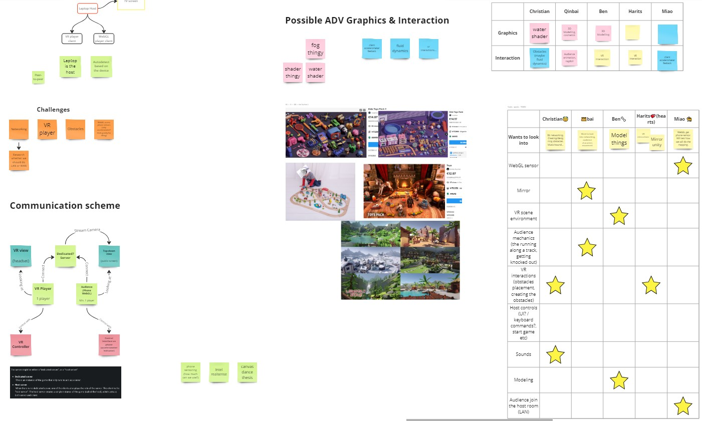
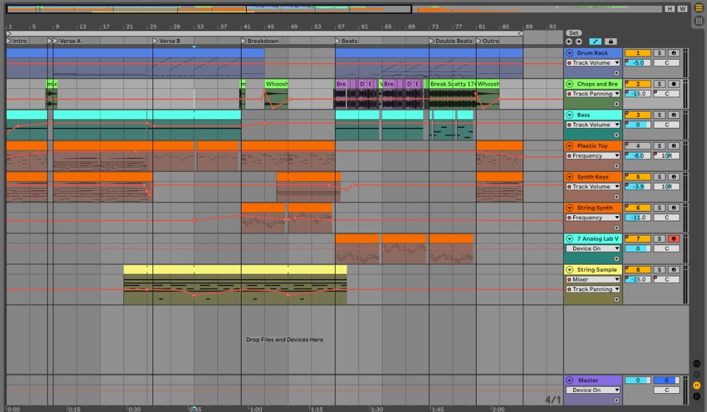

Run Guys
Project work in Advanced Graphics and Interactions - masters's course - Graded A

Platform
Meta Quest 2, Android
Tools used
Unity, Ableton Live
Duration
6 weeks
Team Size
5
Roles
Proj. Manager, Sound Composer
In short
This was one of two group projects during an intensive master's course in advanced graphics and interactions, intended to put to test what we had learned during our master's program.
Run Guys is an interactive VR game where a VR player competes against a physically co-located audience. All audience members watch a shared big screen and control individual avatars using their smartphones' movements. The avatars automatically run around a track, while the VR player strategically places obstacles to eliminate these avatars. The challenge for the audience lies in the dynamic camera, which zooms in when avatars are close together, limiting their view ahead. To succeed, the audience should to disperse to see where obstacles have been placed on their path, even though doing so carries the risk of not having enough time to avoid said obstacles. The last remaining avatar emerge victorious.
Check out our website that showcase the project at: https://runguys.framer.website. You can read more about my personal contribution below.
The situation
The teachers gave the class a design brief for this project, which said to create an experience in which a physically co-located audience where everyone have their individually controllable view or can together control a shared view. After breaking down the, originally complex, brief and a lot of brainstorming — the group decided to combine the fun experience of the game "Fall Guys" and an autorunner game.
Target
Dividing the responsibilities among the group, I chose to focus on managing the project and take the opportunity to learn more about sound design. We did not have a lot of time to finish this project and the team was very ambitious on this one, trying to challenge ourselves to learn a new area. Meaning, as a manager I wanted to make sure we made the deadline for the final exhibition date. With sound design I set the target of creating a music track for our game, something I had not tried before.
Action
I used the application Discord for communication and documentation, and Miro as a online whiteboard. As I usually try to do, I had a table where everyone can update what they are doing and each meeting we would discuss what we have done and what we plan to do. "To do"-list and documentation on the online whiteboard Miro.
I am not a musician, but another person in the group was and he helped me get started with creating music. Using "Ableton Live Lite" and a tutorial I started playing around with virtual instruments and beats. I took inspiration from the "Fall Guys" soundtrack, wanting to get the same intense and fun feeling.
Working on the soundtrack in Ableton.
Result
We managed to get the game ready for exhibition day, crunching quite a bit but we had fun! The game was exhibited during a open house at our university for a day and all visitors who tried it had a lot of fun, especially kids.
I managed to get a soundtrack that both I and the team was pleased with, it captured the playfullness and intensity we wanted for the game. You can hear it in the video below starting at 0:54.
Reflection
Even though I got a nice soundtrack finished, I learned that I do not have the time to continue to create music. I only managed to get the soundtrack thanks to following tutorials, making something from scratch would require me to learn much more about music theory, mixing, composition and so on. However, the knowledge I have gained can help me in communicating with other musicians about sound design on future projects.
I also learned that a team can get very motivated to work hard with team-building. As the team was starting to crunch, I proposed we round of the evenings by playing computer games with each other in the study room and we had incredibly fun. After that, I think everyone was eager to come to campus to work on the project as we knew we would finish the day with lots of fun.